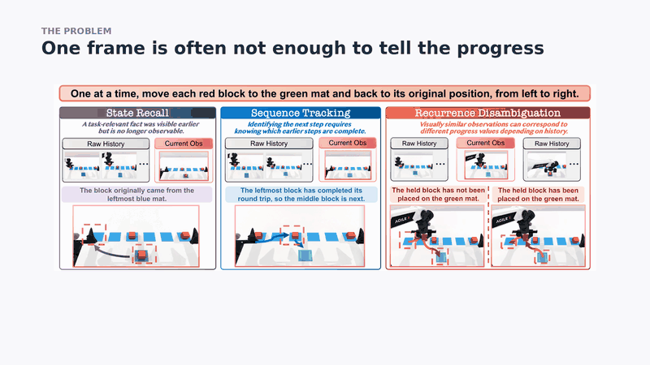

🎯 The problem: context-dependent progress estimation. One instruction: move each red block to the green mat and back, from left to right. Three moments the current frame can't score:
1️⃣ State Recall: which mat did this block come from? That fact has left the frame.
2️⃣… Sequence Tracking: is the leftmost block done? The order isn't visible in one frame.
3️⃣ Recurrence Disambiguation: just before and just after a placement, the frames look the same.

GIFAlt text
Animated figure: one instruction, move each red block to the green mat and back, from left to right. Three moments are highlighted in turn: State Recall, Sequence Tracking and Recurrence Disambiguation.